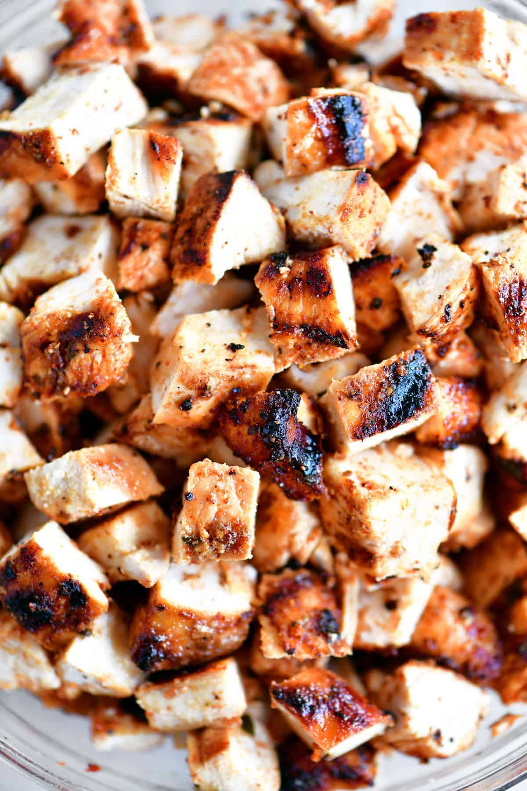

Chipotle Chicken

Description
This copycat Chipotle Chicken receipe is an easy way to enjoy the
authentic flavor of your local Mexican fast food restaurant at home. This
easy-to-follow receipe uses marinated chicken thighs that are pan-fried
and diced into bite-sized pieces without the hassle of marinating
overnight!
Ingredients
- 1 and 1/2 lbs of boneless, skinless chicken thighs
- 2 teaspoons ground coriander
- 2 teaspoons cumin
- 1 can (7oz) chipotle peppers in adobo sauce
- 4 teaspoons garlic, minced
- 2 teaspoons kosher salt
- 4 tablespoons olive oil
Steps
-
To a medium bowl, add the coriander, cumin, chipotle peppers in adobo,
garlic, kosher salt, and olive oil.
-
Add the chicken thighs to a zippered plastic bag and pour the chipotle
mixture over the top.
-
Shake the bag to coat all of the chicken. Remove any excess air and zip
shut.
- Place in the refrigerator to marinate for 1 hour.
-
When ready, add the chicken thighs to a large skillet over medium-high
heat. Cook the thighs on each side for 3-5 minutes, or until slightly
charred. Switch heat to medium-low and continue cooking (about 10-15
minutes) until the internal temperature is 165°F.
- Dice the cooked chicken into bite-sized pieces.
-
Serve with tortillas, rice, fresh pico, sour cream, cheese, and all of
your other favorite fixings (i.e., lettuce, guacamole, caramelized
onions).